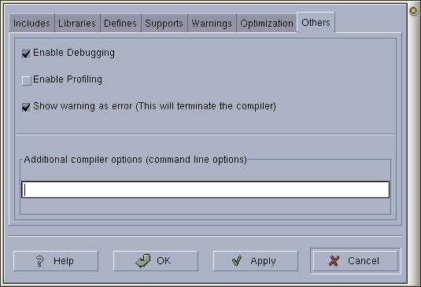

|
Anjuta Manual version 0.1
Copyright (c) Kh. Naba Kumar Singh
|
Other compiler options:
Activate the menu item 'Settings/Compiler options' and Select the 'Others'
page in the settings dialog box.
The misc options for compiling are set in this page.
The first one is the 'Enable Debugging' option. This option tells the compiler
to add extra debug information (such as symbol table), which are
necessary for the program debugging. This makes your program a bit
larger, but that doesn't matters. Does it?
You should enable this option all
the time during the development of your program. When your
program is ready for the release, disable this option and build
your program again. You should clean your project first and then
build, otherwise, because of automatic dependency check, all files
may not be built with this option disabled.
Again, do not set the optimization in the previous page with this
option enabled. Why? Just try it out and find it for yourself :^D.

The second option 'Enable Profiling' is, more or less,
same as the Debug option, except that, it builds your program
with profiling information. Profiling is not yet implemented in Anjuta.
For the time being, you can use gprof, a console based
profiler. Read the man page for gprof to learn how to profile your
program. One thing you should note here is that, enabling profile
in your program will make it run very slowly (It's a nightmare if
enabled in X programs).
The third option is very obvious. It will show warnings as errors.
Put this on if you are very strict with compiler warnings.
Lastly, you can put any other additional compiler options in the entry box marked as
'Other options' which are not handled by Anjuta. I don't think you
will ever come to need this. Only for the sake of flexibility, it has been
added there.